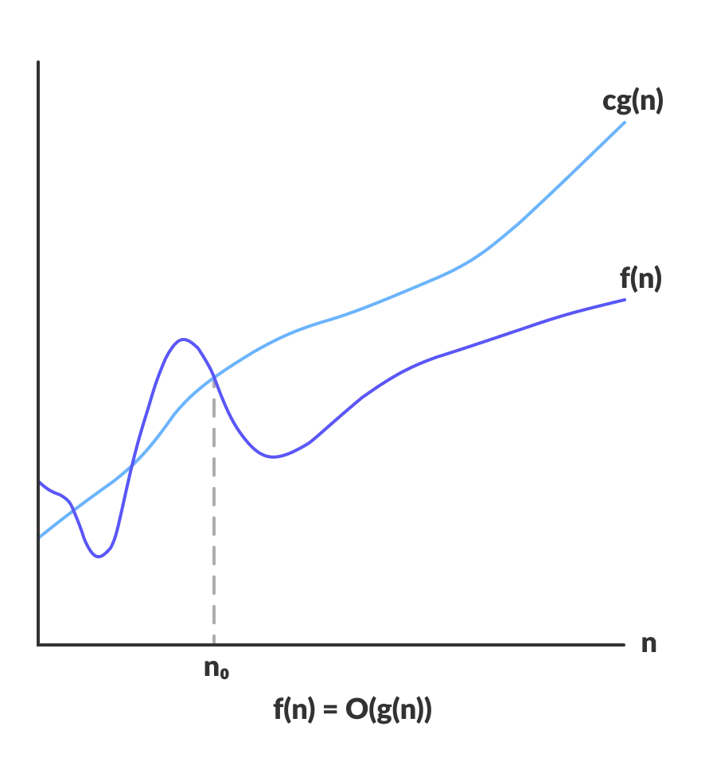
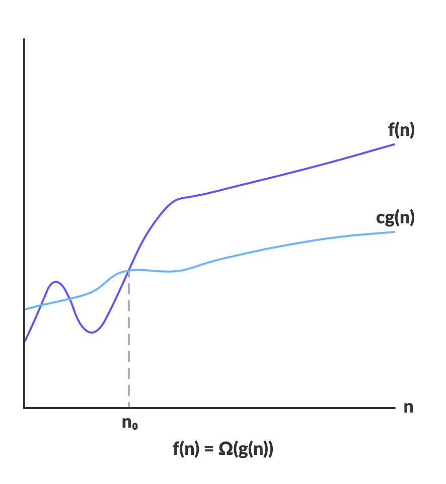
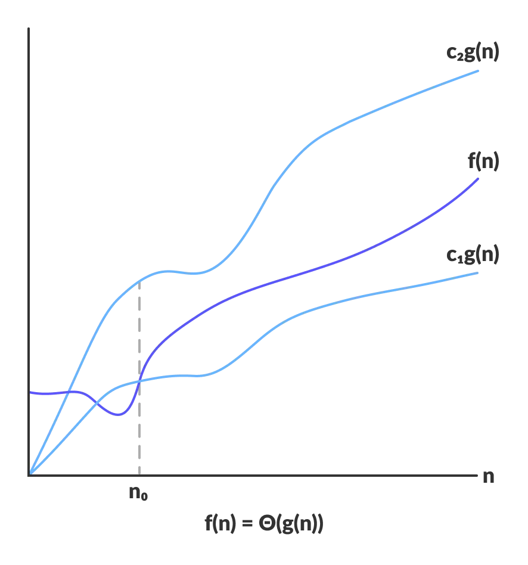

-Algorithm
--An algorithm is a set of well-defined instructions to solve a particular problem. It takes a set of input(s) and produces the desired output
--Asymptotic notations
---Asymptotic notations are the mathematical notations used to describe the running time of an algorithm when the input tends towards a particular value or a limiting value
---The efficiency of an algorithm is measured with the help of asymptotic notations
---The efficiency of an algorithm depends on the amount of time, storage and other resources required to execute the algorithm
---There are mainly three asymptotic notations:
----Big-O notation
-----Big-O notation represents the upper bound of the running time of an algorithm. Thus, it gives the worst-case complexity of an algorithm
-----Graph: 
----Omega notation
-----Omega notation represents the lower bound of the running time of an algorithm. Thus, it provides the best case complexity of an algorithm
-----Graph: 
----Theta notation
-----Theta notation represents the upper and the lower bound of the running time of an algorithm, it is used for analyzing the average-case complexity of an algorithm
-----Graph: 
-Data structures
--Data structure is a storage that is used to store and organize data. It is a way of arranging data on a computer so that it can be accessed and updated efficiently
--Types of data structures
---Linear data structures
----Array
-----Elements in memory are arranged in continuous memory
----Stack
-----Elements are stored in the LIFO principle. That is, the last element stored in a stack will be removed first
----Queue
-----The queue data structure works in the FIFO principle where first element stored in the queue will be removed first
----Linked list
-----Data elements are connected through a series of nodes. And, each node contains the data items and address to the next node
---Non-linear data structures
----Graph
-----Each node is called vertex and each vertex is connected to other vertices through edges
-----Popular graph based data structures
------Spanning tree and minimum spanning tree
------Strongly connected components
------Adjacency matrix
------Adjacency list
----Tree
-----Popular tree data structures
------Binary tree
------Binary search tree
------AVL tree
------B- tree
------B+ tree
------Red black tree